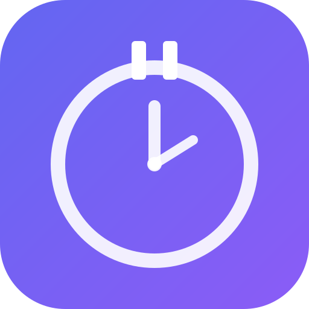

A macOS break reminder that lives in your menu bar.
Track what you work on. Take better breaks.
Configurable countdown (1-60 min) that pops up when it's time for a break.
Timer countdown always visible in the macOS menu bar. Close the window, keep working.
Log what you're working on and what you do during breaks. All stored locally.
Day, week, and month views with charts showing your work and break patterns.
Automatically pauses the timer when you step away. Resumes when you're back.
Beep sounds when the popup fires and when your break timer ends.
Not ready for a break? Quick +5 min snooze or log and keep working.
Everything stays on your machine in a local SQLite database. No accounts, no cloud.